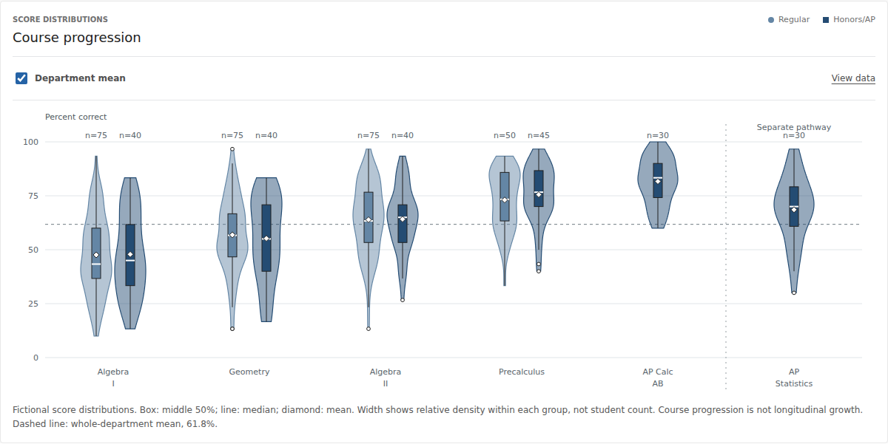

Case study / Logos Education Group
Logos for Schools
Student practice, teacher review, and department analysis using linked assessment and coursework records.
Problem & role
Source records and instructional decisions
A student's answer, an assignment status, and a department summary answer different questions. Bringing them into one interface is not enough: the system has to preserve what each signal means, who can inspect it, and what action it can reasonably support.
I founded Logos Education Group and built this product around connected student, teacher, and administrator workflows. My contributions include assessment logic, data definitions, role-specific workflows, review steps, and software implementation. AI-assisted development is paired with deterministic checks and human review.
My school-side experience includes Canvas/API-informed reporting and teacher-reviewed instructional workflows. This Logos product is separate development work; the fictional records here are not a disclosure of employment or client data.
Logos for Schools
Student, teacher, and administrator workflows

- 01 / Student practice
Check the work, not just the conversation.
Bounded Algebra I and Geometry practice includes checked answers, hints, independent exit checks, and an exact record of attempts. Ambiguous answers remain provisional rather than being forced into a confident verdict.
- 02 / Teacher review
Trace a concern to the underlying attempt.
Teachers can inspect source-linked practice evidence, shared school conversations, class practice plans, and explicit requests for help. Hinted practice remains distinguishable from independent work.
- 03 / School investigation
Keep calculations inspectable.
Administrator investigations use scoped department records, checked calculations, and figures with supporting data. Narrative interpretation is tied to the records selected for the question.
Implementation choices
- React and TypeScript: role-specific interfaces, structured responses, and explicit state handling.
- SQL-backed records and Drizzle: structured learning evidence and saved application state.
- Tool-using AI: bounded source projections, role checks on each execution, streamed replies, cancellation, and cost accounting.
- KaTeX and charts: readable mathematics and figures that retain access to supporting values.
The demonstration uses a synthetic identity switch, not institutional authentication. The Canvas-shaped records are generated snapshots, not a live connection to a school's LMS.
Evidence & outcome
Validation and limitations
The 1 October 2026 release recorded 385 passing automated checks and hosted evaluations of student advising, teacher figures, and administrator investigations. The 5 October read-only check confirmed role-scoped context and the configured live-AI mode; it was not a new paid model evaluation.
Eight authored practice journeys are separate from the 500-student historical cohort. They illustrate the connected experience. They do not mean 500 students used the practice product, and they do not demonstrate learning gains.
The shared foundation is LOGOS-MATH-V2 revision 5: one 30-question, 45-minute assessment with 500 fictional students, 21 sections, and 15,000 synthetic responses. Additional coursework and practice evidence extend that foundation without replacing the assessment.

Not established by this demonstration
- Production Canvas synchronization, institutional sign-in, or grade passback.
- Deployment to a real school or evidence of client adoption.
- Calibrated test scores, national norms, individual placement validity, or causal learning effects.
The outcome is an inspectable product foundation and a demonstrated workflow, not a claim of educational impact.
Related work / Limited beta
Logos Tutor
Logos Tutor explores conversational mathematics support for an individual learner, with a user-controlled Ask Grant workflow. The design question is how AI support can hand a specific learning concern back to a person without removing learner control.
This complements the school workspace but is not the same product. On 5 October 2026, the native file upload passed, but image reading failed because the upstream provider rejected authentication. Signed-in history and instructor replies remained unverified because the required account was unavailable for that check.
This is limited-beta development work, not a live-ready end-to-end service. The upload, tutoring, and instructor-reply chain has not passed release verification. These Tutor-specific limits do not invalidate the separate Schools evidence above. The link below describes the product; it does not expose the unlisted application.
Discuss Logos Tutor developmentSkills demonstrated
Education systems development
The work demonstrates translating a learning problem into a data model, designing role-specific workflows, integrating AI behind evidence and review boundaries, and evaluating the resulting behavior. These are the skills I bring to learning engineering, education data, assessment technology, and technical EdTech roles.